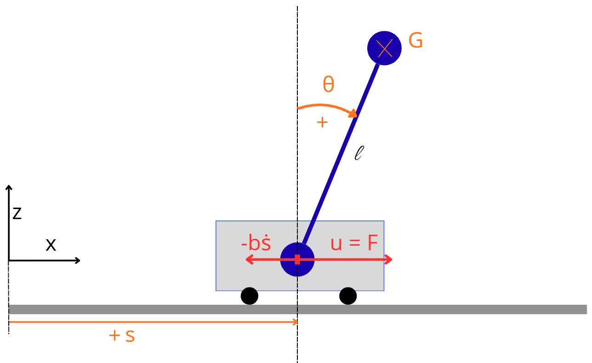
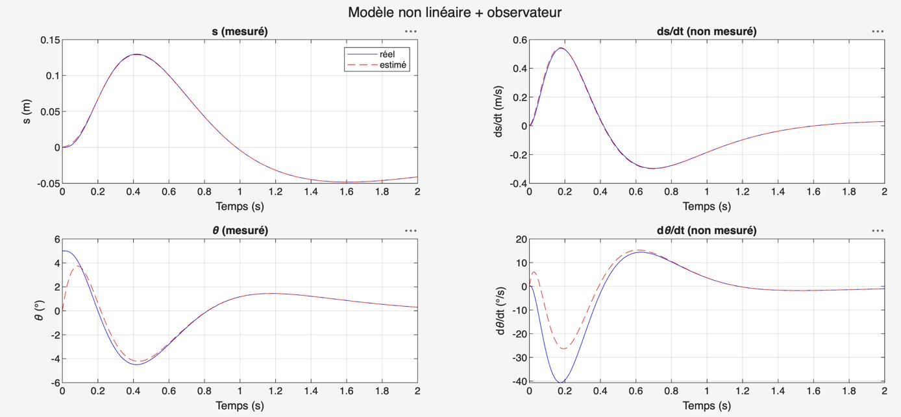
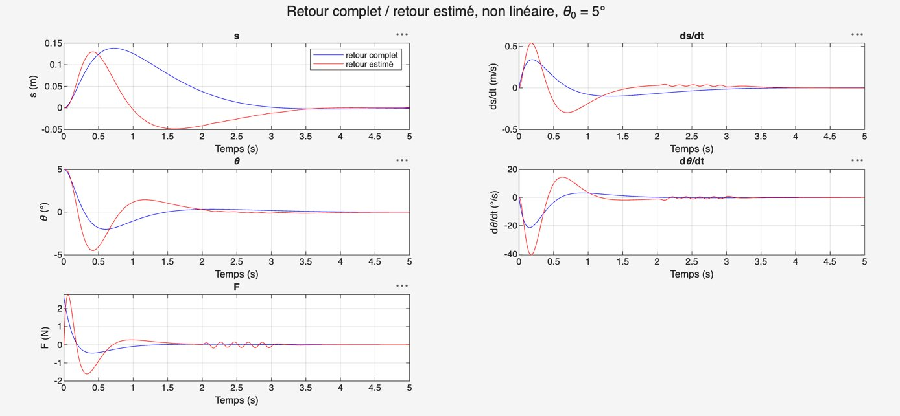
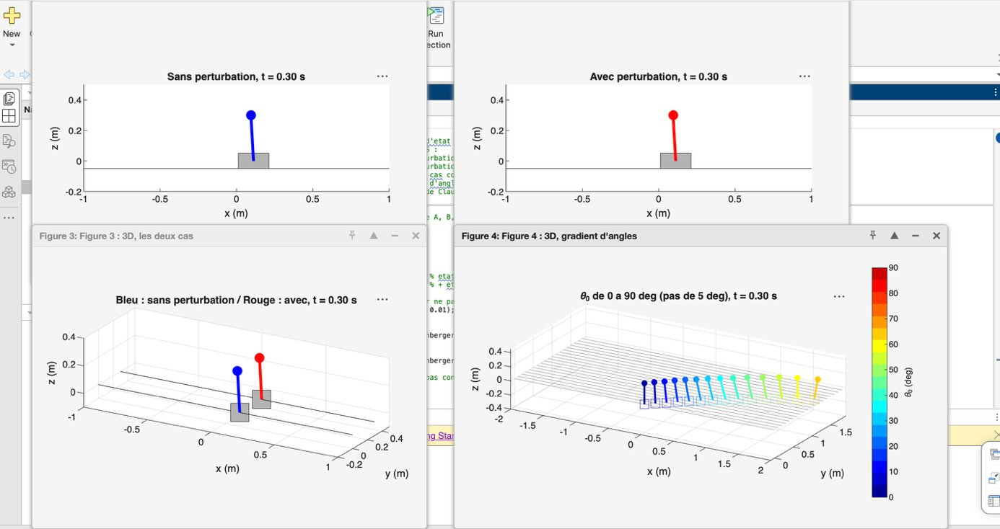
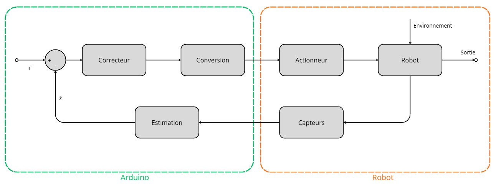

01Contexte
Deux TP enchaînés du cours « Robotique et intelligence embarquée » : d'abord modéliser et stabiliser un pendule inversé sur chariot en simulation (MATLAB), puis appliquer les mêmes outils sur un vrai robot auto-équilibré à deux roues (kit Keyestudio KS0193, Arduino).


02Mon rôle
TP1 en binôme : mise en équations, code MATLAB et rapport, partagés à deux. TP2 en groupe de 4 : j'ai écrit tout le code Arduino.
03Modéliser et analyser
- Équations de Lagrange, forme d'état non linéaire, puis linéarisation autour de la verticale haute.
- Analyse en boucle ouverte (mode instable), commandabilité et observabilité selon les capteurs disponibles.
04Commander et estimer
Deux méthodes de retour d'état comparées : placement de pôles et LQR (influence des poids Q et R sur la rapidité et l'effort). Comme toutes les grandeurs ne sont pas mesurées, un observateur de Luenberger reconstruit l'état. Tout est validé sur le modèle non linéaire, avec un bruit de mesure ajouté.



05Sur le vrai robot
- Capteurs : centrale inertielle MPU6050 (angle filtré) et codeurs à effet Hall sur les roues.
- Régulation en cascade : PD sur l'angle, PI sur la vitesse, échantillonnage par interruption timer.
- Retour d'état z = [s, ṡ, θ, θ̇] avec un gain K calculé sous MATLAB (placement de pôles), réglé en essais grâce à la télémétrie.

06Ce que j'ai appris
- La démarche complète d'un asservissement : modèle, linéarisation, analyse, synthèse, validation non linéaire.
- Le compromis rapidité / effort de commande, visible directement dans le choix des poids LQR.
- L'écart entre simulation et réel : unités, saturation, zone morte et bruit ne sont pas dans le modèle, et ils comptent.